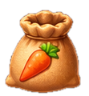
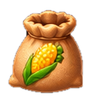

Desktop / scale test · 500 × 668
Túi đồ
Kho Kho khởi đầu
39 / 1.000
Tiếp theo: 2.500 · Chi phí: 500 VàngTất cả (2)
Hạt giống (2)

×35Hạt cà rốt
×4Hạt ngôContent is HTML and can update from existing React/DOM selectors. Inspect frame corners when stretched.
Mobile / scale test · 390 × 735 inside 390 × 844
Túi đồ
Kho Kho khởi đầu
39 / 1.000
Tiếp theo: 2.500 · Chi phí: 500 VàngTất cả (2)
Hạt giống (2)
×35Hạt cà rốt
×4Hạt ngô
On actual mobile, test panel clipping, scroll, keyboard close/focus and safe areas in HappyFarm itself.